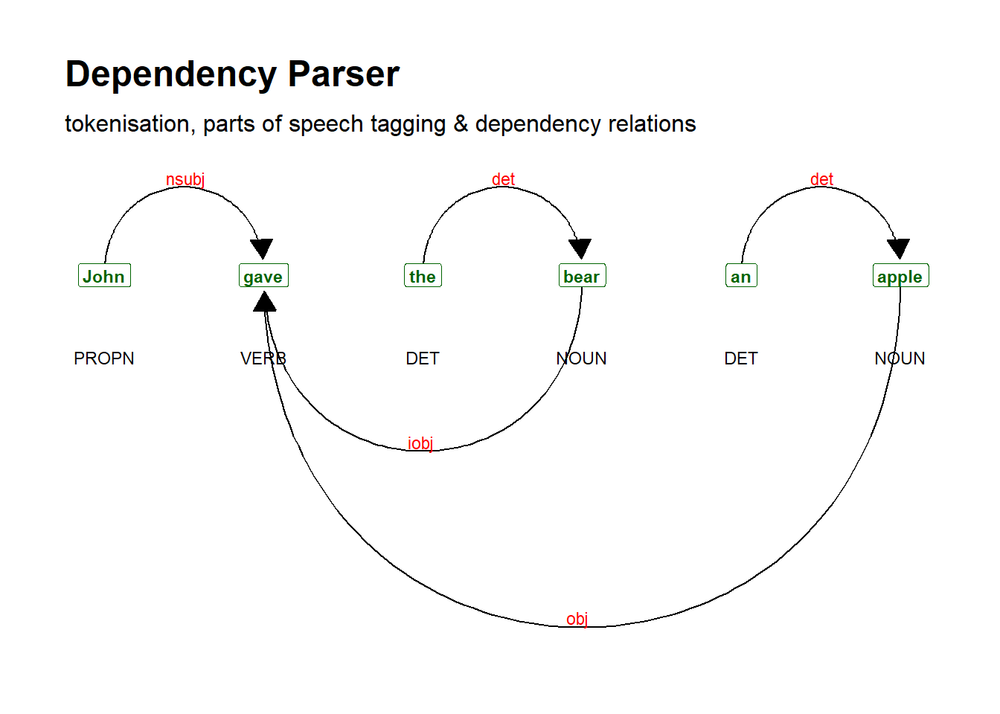

Section 5 Advanced String Processing
Above, we have used functions and regular expressions to extract and find patters in textual data. Here, we will focus on common methods for cleaning text data that are applied before implementing certain methods.
We start by installing and then loading some additional packages, e.g., the quanteda (see here for a cheat sheet for the quanteda package), the tm, and the udpipe package, which are extremely useful when dealing with more advanced text processing.
One common procedure is to split texts into sentences which we can do by using, e.g., the tokenize_sentence function from the quanteda package. I also unlist the data to have a vector wot work with (rather than a list).
## textpos10001
## "Gary Busey is superb in this musical biography."
## textpos10002
## "Great singing and excellent soundtrack."
## textpos10003
## "The Buddy Holly Story is a much better movie than La Bamba."
## textpos10004
## "From reading other comments, there may be some historical inaccuracies."
## textpos10005
## "Regardless, it is a fun toe-tapping film, and a good introduction to Buddy Holly's music."
## textpos10006
## ""Another common procedure is to remove stop words, i.e., words that do not have semantic or referential meaning (like nouns such as tree or cat, or verbs like sit or speak or adjectives such as green or loud) but that indicate syntactic relations, roles, or features.(e.g., articles and pronouns). We can remove stopwords using, e.g., the removeWords function from the tm package
## textpos1000
## "Gary Busey superb musical biography. Great singing excellent soundtrack. The Buddy Holly Story much better movie La Bamba. From reading comments, may historical inaccuracies. Regardless, fun toe-tapping film, good introduction Buddy Holly's music.\r\n"To remove the superfluous white spaces, we can use, e.g., the stripWhitespace function from the tm package.
## textpos1000
## "Gary Busey superb musical biography. Great singing excellent soundtrack. The Buddy Holly Story much better movie La Bamba. From reading comments, may historical inaccuracies. Regardless, fun toe-tapping film, good introduction Buddy Holly's music. "It can also be useful to remove numbers. We can do this using, e.g., the removeNumbers function from the tm package.
et_wonum <- tm::removeNumbers("This is the 1 and only sentence I will write in 2022.")
# inspect
et_wonum## [1] "This is the and only sentence I will write in ."We may also want to remove any type of punctuation using, e.g., the removePunctuation function from the tm package.
## textpos1000
## "Gary Busey is superb in this musical biography Great singing and excellent soundtrack The Buddy Holly Story is a much better movie than La Bamba From reading other comments there may be some historical inaccuracies Regardless it is a fun toetapping film and a good introduction to Buddy Hollys music\r\n"5.1 Stemming
Stemming is the process of reducing a word to its base or root form, typically by removing suffixes. For example, running becomes run and jumps becomes jump. This helps in normalizing words to their core meaning for text analysis and natural language processing tasks. We can stem a text using, e.g., the stemDocument function from the tm package
## textpos1000
## "Gari Busey is superb in this music biography. Great sing and excel soundtrack. The Buddi Holli Stori is a much better movi than La Bamba. From read other comments, there may be some histor inaccuracies. Regardless, it is a fun toe-tap film, and a good introduct to Buddi Holli music."5.2 Part-of-speech tagging and dependency parsing
A far better option than stemming is lemmatization as lemmatization is based on proper morphological information and vocabularies. For lemmatization, we can use the udpipe package which also tokenizes texts, adds part-of-speech tags, and provides information about dependency relations.
Before we can tokenize, lemmatize, pos-tag and parse though, we need to download a pre-trained language model.
If you have downloaded a model once, you can also load the model directly from the place where you stored it on your computer. In my case, I have stored the model in a folder called udpipemodels
# load language model from your computer after you have downloaded it once
m_eng <- udpipe::udpipe_load_model(file = here::here("english-ewt-ud-2.5-191206.udpipe"))We can now use the model to annotate out text.
# tokenise, tag, dependency parsing
review_annotated <- udpipe::udpipe_annotate(m_eng, x = review) %>%
as.data.frame() %>%
dplyr::select(-sentence)
# inspect
head(review_annotated, 10)## doc_id paragraph_id sentence_id token_id token lemma upos xpos
## 1 doc1 1 1 1 Gary Gary PROPN NNP
## 2 doc1 1 1 2 Busey Busey PROPN NNP
## 3 doc1 1 1 3 is be AUX VBZ
## 4 doc1 1 1 4 superb superb ADJ JJ
## 5 doc1 1 1 5 in in ADP IN
## 6 doc1 1 1 6 this this DET DT
## 7 doc1 1 1 7 musical musical ADJ JJ
## feats head_token_id dep_rel
## 1 Number=Sing 4 nsubj
## 2 Number=Sing 1 flat
## 3 Mood=Ind|Number=Sing|Person=3|Tense=Pres|VerbForm=Fin 4 cop
## 4 Degree=Pos 0 root
## 5 <NA> 8 case
## 6 Number=Sing|PronType=Dem 8 det
## 7 Degree=Pos 8 amod
## deps misc
## 1 <NA> <NA>
## 2 <NA> <NA>
## 3 <NA> <NA>
## 4 <NA> <NA>
## 5 <NA> <NA>
## 6 <NA> <NA>
## 7 <NA> <NA>
## [ reached 'max' / getOption("max.print") -- omitted 3 rows ]We could, of course, perform many more manipulations of textual data but this should suffice to get you started.
Now, we combine the pos-tagged text back into a text.
review_annotated %>%
as.data.frame() %>%
dplyr::summarise(postxt = paste(token, "/", xpos, collapse = " ", sep = "")) %>%
dplyr::pull(unique(postxt)) -> review_postagged
# inspect
review_postagged## [1] "Gary/NNP Busey/NNP is/VBZ superb/JJ in/IN this/DT musical/JJ biography/NN ./. Great/JJ singing/NN and/CC excellent/JJ soundtrack/NN ./. The/DT Buddy/NNP Holly/NNP Story/NNP is/VBZ a/DT much/JJ better/JJR movie/NN than/IN La/NNP Bamba/NNP ./. From/IN reading/VBG other/JJ comments/NNS ,/, there/EX may/MD be/VB some/DT historical/JJ inaccuracies/NNS ./. Regardless/RB ,/, it/PRP is/VBZ a/DT fun/NN toe/NN -/HYPH tapping/NN film/NN ,/, and/CC a/DT good/JJ introduction/NN to/IN Buddy/NNP Holly/NNP 's/POS music/NN ./."Visualising the dependencies (syntactic )
sent <- udpipe::udpipe_annotate(m_eng, x = "John gave the bear an apple") %>%
as.data.frame()
# generate dependency plot
dplot <- textplot::textplot_dependencyparser(sent, size = 3) ## Loading required namespace: ggraph
5.3 Example: Data processing chain
When working with texts, we usually need to clean the data. Below, we do some basic cleaning using a pipeline or data processing chain. In a data processing chain, we combine commands to achieve an end result (in our case, a clean text).
reviews_pos_split_clean <- reviews_pos_split %>%
# replace elements
stringr::str_replace_all("<.*?>", " ") %>%
# convert to lower case
tolower() %>%
# remove strange symbols
stringr::str_replace_all("[^[:alnum:][:punct:]]+", " ") %>%
# remove \"
stringr::str_remove_all("\"") %>%
# remove superfluous white spaces
stringr::str_squish()
# remove very short elements
reviews_pos_split_clean <- reviews_pos_split_clean[nchar(reviews_pos_split_clean) > 10]
# inspect data
nchar(reviews_pos_split_clean)## [1] 1728 639 581 456 126 182 3833 151 683 29 104 91 42 25 714
## [16] 461 405 250 95 57 719 368 1502 121 1636 709 44 681 78 222
## [31] 904 247 516 1935 2671 1148 2548 815 705 27 108 209 30 553 287
## [46] 896 424 64 546 61 195 32 43 39 199 120 615 81 133 290
## [61] 45 278 20 231 77 98 340 1957 377 41 35 41 303 716 32
## [76] 52 218 1117 1764 220 98 212 576 70 26 780 242 130 241 87
## [91] 249 109 63 81 464 101 369 34 464 19
## [ reached getOption("max.print") -- omitted 2656 entries ]Inspect text
5.4 Concordancing and KWICs
Creating concordances or key-word-in-context displays is one of the most common practices when dealing with text data. Fortunately, there exist ready-made functions that make this a very easy task in R. We will use the kwic function from the quanteda package to create kwics here.
kwic_multiple <- quanteda::kwic(reviews_pos_split_clean,
pattern = phrase("audience"),
window = 3,
valuetype = "regex") %>%
as.data.frame()
# inspect data
head(kwic_multiple)## docname from to pre keyword post
## 1 text1 222 222 painted for mainstream audiences , forget charm
## 2 text9 90 90 community . the audience at the end
## 3 text35 36 36 often find big audiences . people seem
## 4 text37 188 188 this keeps the audience on the edge
## 5 text37 376 376 krabbé holds the audience's attention and looks
## 6 text76 8 8 message to the audience . his
## pattern
## 1 audience
## 2 audience
## 3 audience
## 4 audience
## 5 audience
## 6 audienceWe can now also select concordances based on specific features. For example, we only want those instances of “great again” if the preceding word was “America”.
kwic_multiple_select <- kwic_multiple %>%
# last element before search term is "the"
dplyr::filter(str_detect(pre, "the$"))
# inspect data
head(kwic_multiple_select)## docname from to pre keyword post pattern
## 1 text9 90 90 community . the audience at the end audience
## 2 text37 188 188 this keeps the audience on the edge audience
## 3 text37 376 376 krabbé holds the audience's attention and looks audience
## 4 text76 8 8 message to the audience . his audience
## 5 text77 32 32 message for the audience . they are audience
## 6 text169 123 123 home gives the audience enough sympathy to audienceAgain, we can use the write.table function to save our kwics to disc.
As most of the data that we use is on out computers (rather than being somewhere on the web), we now load files with text from your computer.
We now turn to data visualization basics.